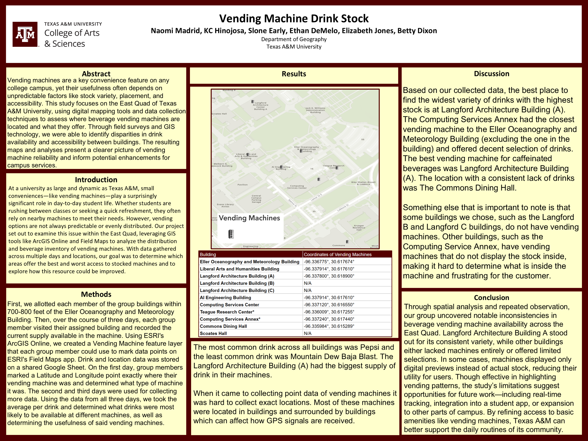

GNSS + Field Maps / Spring 2025
Vending Machine Tracker
Using Global Navigation Satellite System (GNSS) field observations to map beverage vending machines and their recorded stock in Texas A&M’s East Quad.

Open full-size figure ↗

Open full-size figure ↗
The problem
Where are beverage vending machines in the East Quad, and how reliably are they stocked? Our group investigated differences in machine locations, drink variety, and observed stock.
My role
I collected georeferenced vending-machine points and attributes with ArcGIS Field Maps and produced maps as part of the group project. The findings below come from our team’s poster.
Data and method
Our team created a shared vending-machine feature layer in ArcGIS Online, assigned buildings to group members, and collected observations with ArcGIS Field Maps. We recorded machine type and location on the first visit, then gathered stock observations over three days. Drink and location records were stored in a shared Google Sheet.
The group compared average drink availability across those visits. The map below uses only the coordinates reported in the poster.
Vending machine locations
SOURCE POINTSThe original map is shown above. The interactive map loads when Leaflet is available.
Eight source records represent seven unique coordinates. Liberal Arts and Humanities and AI Engineering share a coordinate in the source; both names are preserved in one popup.
View source coordinates
| Building | Latitude | Longitude |
|---|---|---|
| 30.617674 | -96.336775 | |
| 30.617610 | -96.337914 | |
| 30.618900 | -96.337800 | |
| 30.617610 | -96.337914 | |
| 30.616550 | -96.337120 | |
| 30.617255 | -96.336009 | |
| 30.617440 | -96.337240 | |
| 30.615289 | -96.335984 |
No coordinate supplied: Langford B, Langford C, and Scoates Hall. No replacement points were added.
What I found
Our group found that Langford Architecture Building A offered the widest drink variety and highest stock in the collected sample. The poster also reports consistently limited stock at the Commons Dining Hall and notes that some buildings had no machine.
The poster identifies indoor and nearby-building interference as a limitation when collecting location points. Some machines concealed their inventory, making stock observations harder to interpret.
What I would do differently
I would verify the repeated coordinates against the original field observations, document GNSS collection conditions, and distinguish visible stock from machines whose inventory could not be checked. Those changes would make the map’s location and availability limits clearer.
Project source
GEOG 352 group project poster, Spring 2025. The location map and source coordinates are reproduced from that coursework; the reflection describes proposed future improvements.